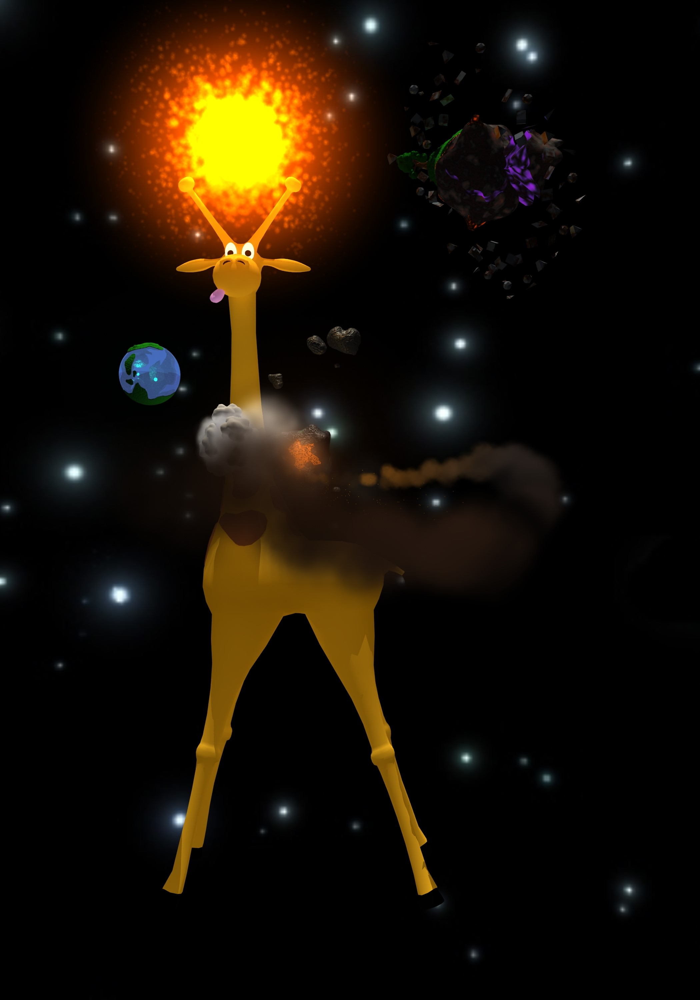
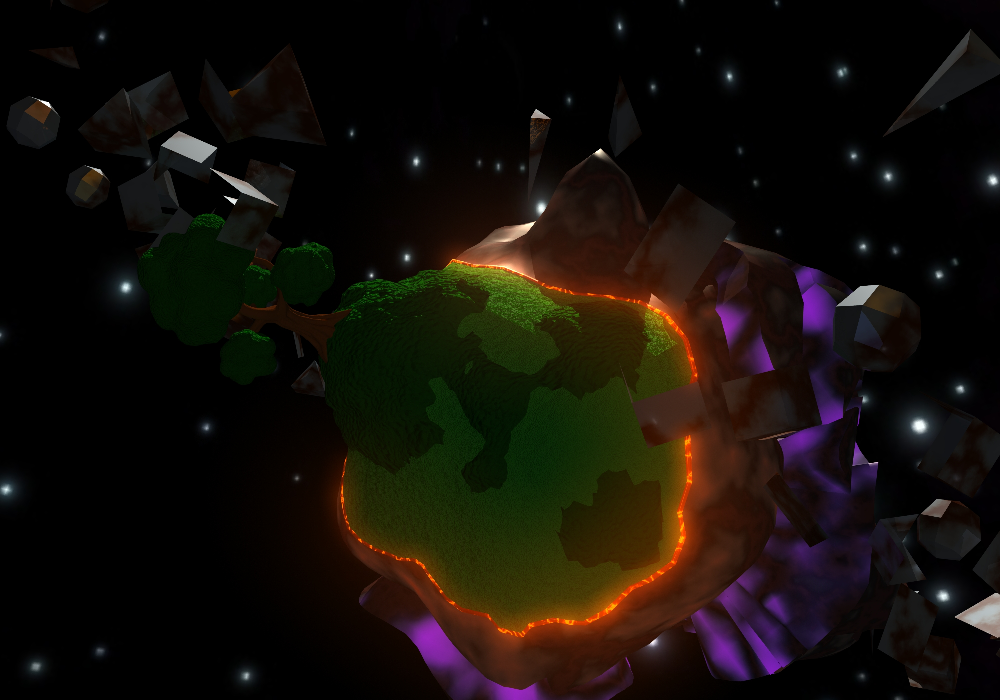
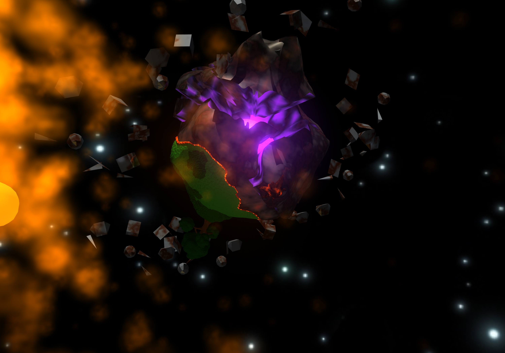
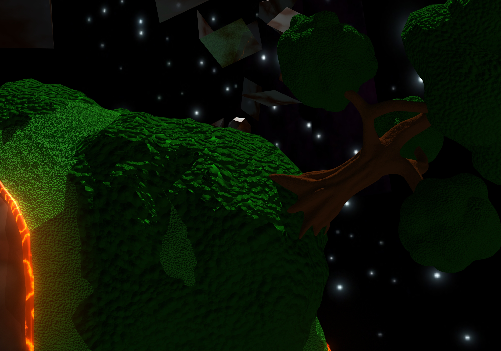
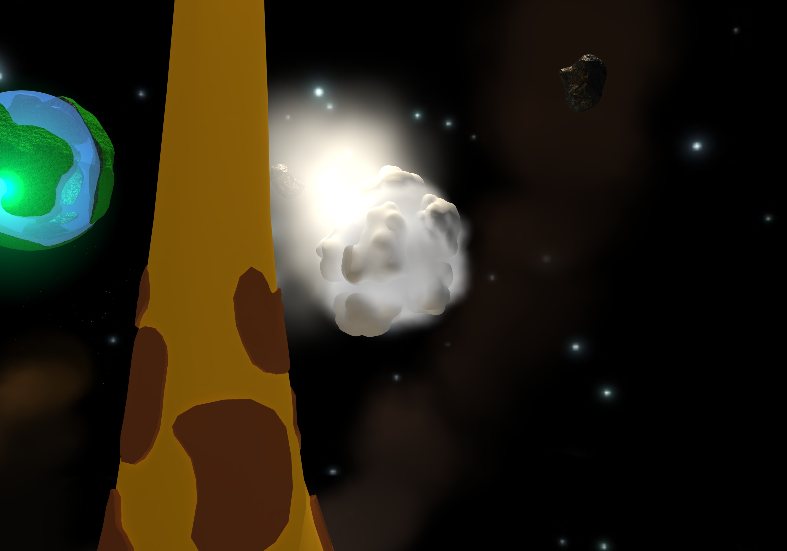
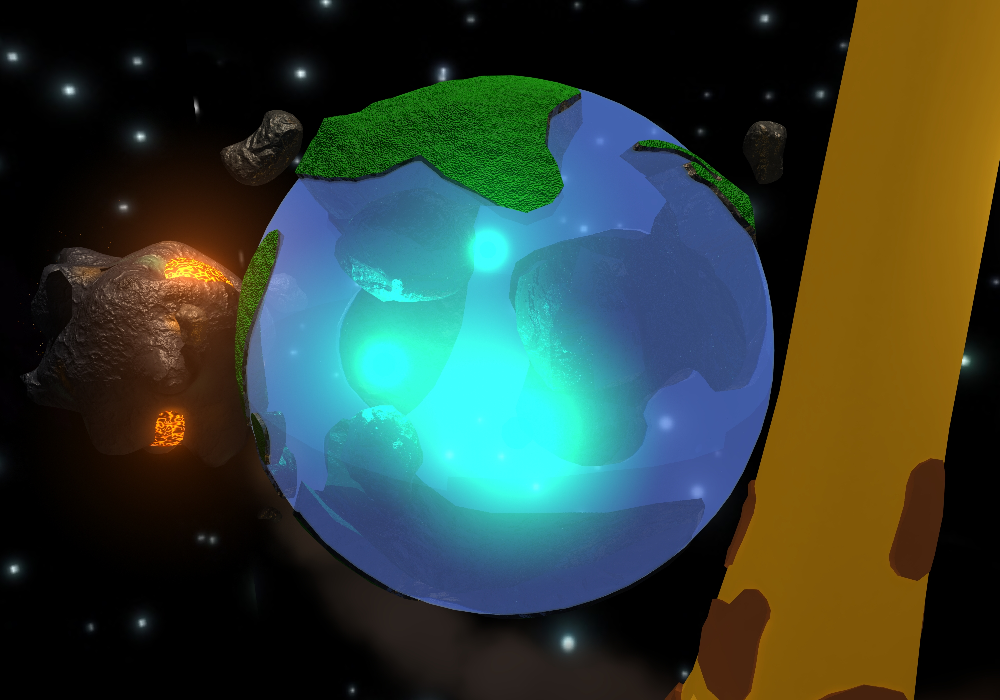
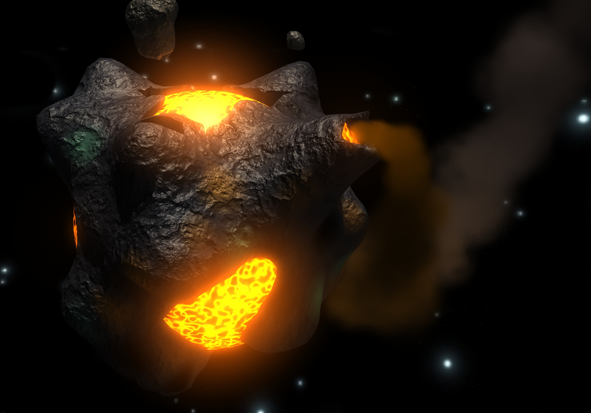

GiraffeCentrism
Finished in June 2014
Reason to create project:
This project was created in free time because I wanted to make some experiments with lights, particles and material animated by expressions in Maya.
Second reason to make this project was an idea of giraffe being the centre on universe. [1]
About project:
Project was created in Maya 2014 (Student licence), rendered by Mental Ray
Scene contains glowing giraffe with sun made of particles between its horns. There are also 4 planets and bunch of asteroids all revolving around neck of the Giraffe.
First planet is made of water with several islands floating on its surface and 3 glowing spheres inside. Second planet is stony with pools of lava.
Lava material uses 3D crater texture modified with expression over time to look more realistic. There is also volcano spewing sparks and great amount of persistent smoke. Smoke leaves long trail behind planet.
Third planet is composed of several clouds with dense white cloudy fog between them. Fog leaves very short trail behind planet.
Last planet is is mostly burnt with few patches of grass that smoulder on the edges. Planet is broken to shards revealing glowing purple core. There is ring of metal debris around planet.
Resources:
Clouds and tree are imported from one of my old projects (Cloud Factory).
Skybox isn't mine and I downloaded it from one web, but I no longer has the link to its source.
Scene is expected to be used in Maya. Exported .fbx file probably doesn't have all the functions or correct look. (.fbx scene is just for preview or to access models even without Maya)
[1] One of my friends loves giraffes. Which brought an idea "Her whole universe revolves around giraffes. Hey! GiraffeCentric solar system!"
Renders:







Concept Arts:
 Renders: (when project was not finished)
Renders: (when project was not finished)
/GiraffeCentrism01.jpg)
/GiraffeCentrism02.jpg)
/GiraffeCentrism03.jpg)
/GiraffeCentrism04.jpg)
/GiraffeCentrism05.jpg)
/GiraffeCentrism06.jpg)
/GiraffeCentrism07.jpg)
/GiraffeCentrism08.jpg)
/GiraffeCentrism09.jpg)
/GiraffeCentrism10.jpg)
/GiraffeCentrism11.jpg)
/GiraffeCentrism12.jpg)
/GiraffeCentrism13.jpg)